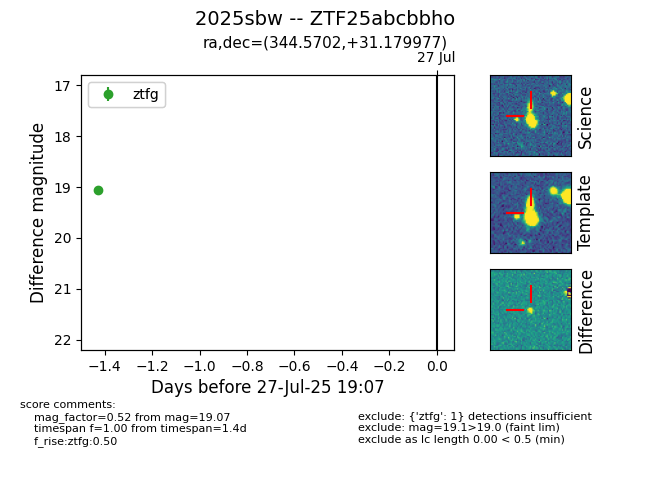

Target 2025sbw at 2025-07-27 19:07, see:
FINK: fink-portal.org/2025sbw
Lasair: lasair-ztf.lsst.ac.uk/objects/2025sbw
ALeRCE: alerce.online/object/2025sbw
TNS: wis-tns.org/object/2025sbw
YSE: ziggy.ucolick.org/yse/transient_detail/2025sbw
alt names
ZTF25abcbbho (ztf,fink)
2025sbw (tns,yse)
coordinates:
equatorial (ra, dec) = (344.5702,+31.17998)
galactic (l, b) = (96.1782,-25.74773)
photometry
last ztfg=19.07
1 ztfg detections
